യൂണിക്കോഡിലെത്തിയ മലയാളം:
ചില ഭാഷാസാംസ്കാരിക വിചാരങ്ങൾ
ഡോ. കാവ്യ മനോഹർ
ഡിജിറ്റൽ അക്ഷരനിർവ്വചനസംവിധാനം
ഇടക്കൽ ഗുഹകളിലെ ശിലാലിഖിതം
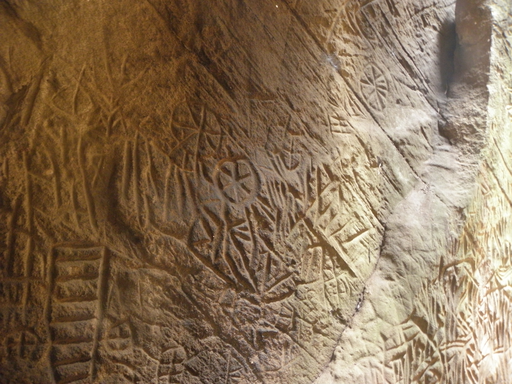താളിയോലയിലെ എഴുത്ത്
കടലാസിലെ കയ്യെഴുത്ത്
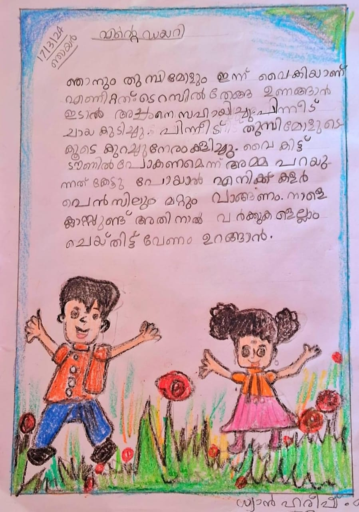ലിപിശൈലികളുടെ സ്വാഭാവിക പരിണാമം
ലോഹം കൊണ്ടുള്ള അച്ചുകൾ
സംക്ഷേപവേദാർത്ഥം, 1772 - മലയാളത്തിൽ അച്ചടിക്കപ്പെട്ട ആദ്യപുസ്തകം
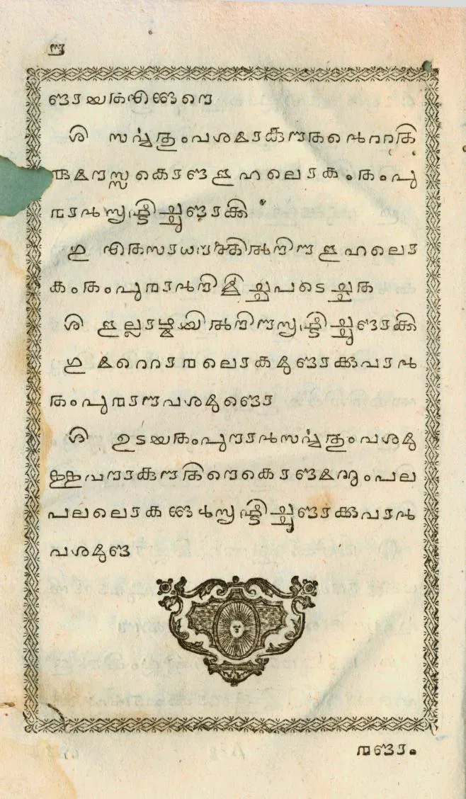റമ്പാൻ ബൈബിൾ, 1811, ഇന്ത്യയിൽ നിന്ന് മലയാളത്തിൽ അച്ചടിക്കപ്പെട്ട ആദ്യപുസ്തകം
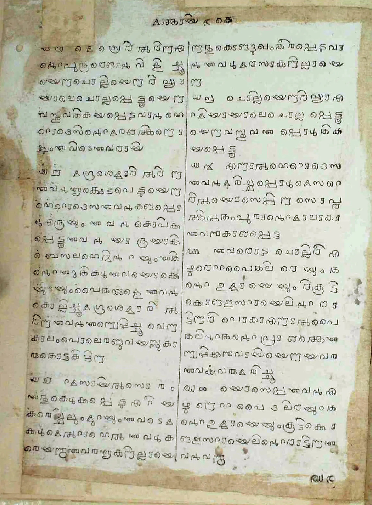 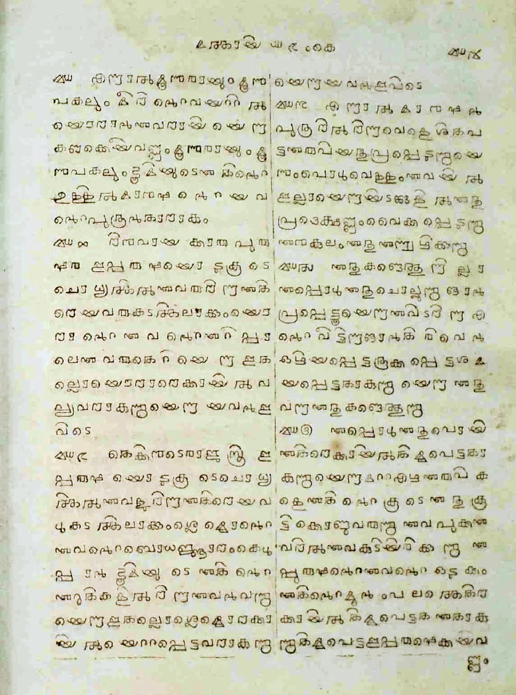പുതിയനിയമം, 1829, ബെയിലിയുടെ മലയാളം ഫോണ്ടിൽ.
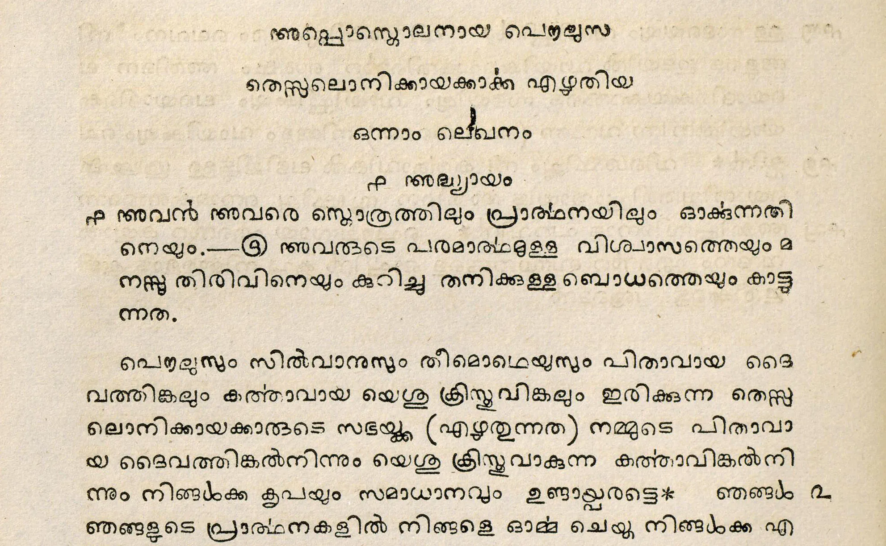ഭാഷയറിയുന്ന ഡിജിറ്റൽ ഉപകരണങ്ങൾ
ആനയുടെ
മലയാളം
4 സിലബിൾ, 6 അക്ഷരം
നാമം, സംബന്ധിക
മൊഴിമാറ്റം
കേൾക്കാം, കാണാം
അക്ഷരങ്ങൾ കമ്പ്യൂട്ടറിന് ബൈറ്റുകൾ!!
യൂണിക്കോഡ്
ഡിജിറ്റൽ അക്ഷരമാല
യൂണിക്കോഡിൽ മലയാളം: ചരിത്രത്തിലൂടെ
October 1991 Unicode Version 1.0

കൂട്ടക്ഷരങ്ങൾ, ചില്ലുകൾ? 🔎
ഺ, ഩ ? 🔎
അക്കങ്ങൾ, അളവുകൾ? 🔎
എന്താണ് കൂട്ടക്ഷരങ്ങൾ ഇല്ലാത്തത്?
ക ് ക -> ക്ക
യൂണിക്കോഡിൽ അക്ഷരങ്ങൾ ചേർക്കുന്നതെങ്ങനെ?
ഡിജിറ്റൽ ഭാഷാശാസ്ത്രവും വ്യാകരണവും
അകാരാദിക്രമം
ക ക് കു ക്ക
സന്ധിനിയമങ്ങൾ
ആനയുടെ
ആന + ഉടെ
ആ ന യ ു ടെ
സിലബിൾ
കാർത്തിക
കാൎത്തിക
ഭാഷാശാസ്ത്രപഠനങ്ങൾ
ഭാഷയിലെത്ര വാക്കുകൾ?
പ്രകാശം പുത്രൻ
കൂലി കുസുമം
പ്രകാശം പുത്രൻ
കൂലി കുസുമം
ശുഭരാത്രി
ശുഭരാത്രി
ക ാ -> കാ
ക െ-> കെ
ക ു -> കു
ക ് ക -> ക്ക
ക ് യ -> ക്യ
ക ് ര -> ക്ര
യൂണിക്കോഡ് ഫോണ്ടുകളിലെ ചിത്രീകരണ സാദ്ധ്യതകൾ
പ്രാദേശിക ലിപിഭേദങ്ങൾ
പച്ചക്കള്ളം വെള്ളം
കാച്ചാണി വെള്ളയമ്പലം
പച്ചക്കള്ളം വെള്ളം
കാച്ചാണി വെള്ളയമ്പലം
🥥തേങ്ങ
🥥തേങ്ങ
5. ലിപിശൈലികൾ, പരിഷ്കരണങ്ങൾ
1971 Government of Kerala order announcing the introduction of the reformed Malayalam script.
1971 Government of Kerala order announcing the introduction of the reformed Malayalam script.
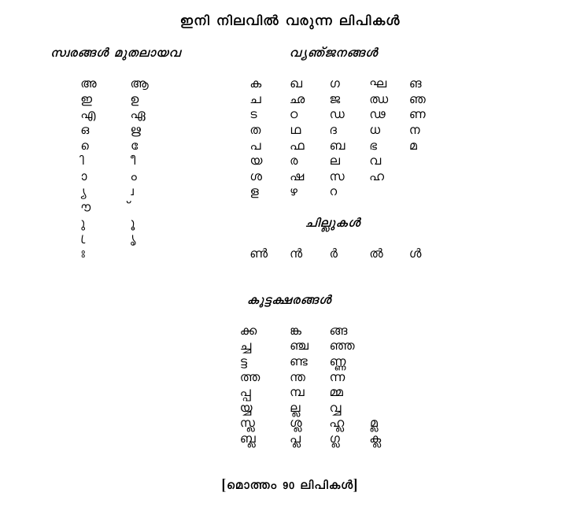1971 newspaper article in Mathrubhumi by K Bhaskaran Nair introducing Reformed Malayalam: its features and development.
1980
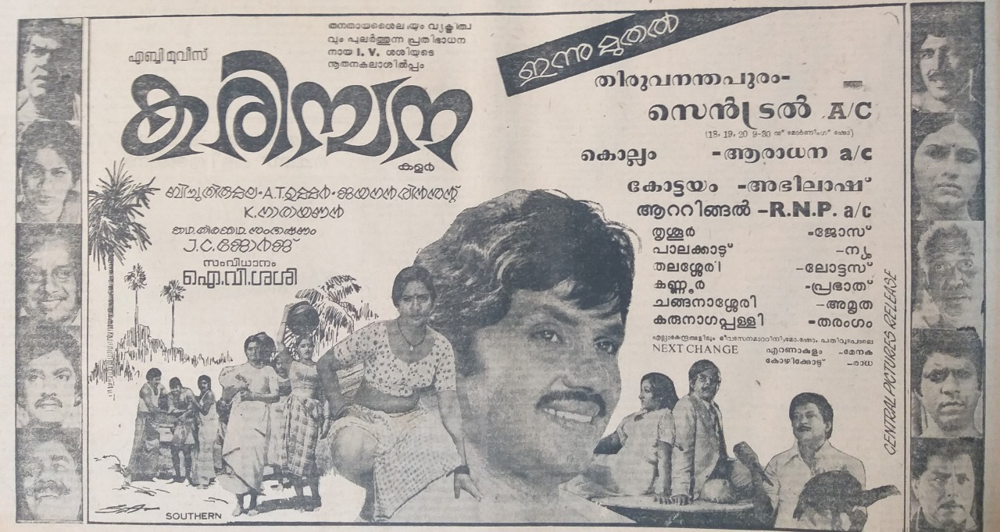1988
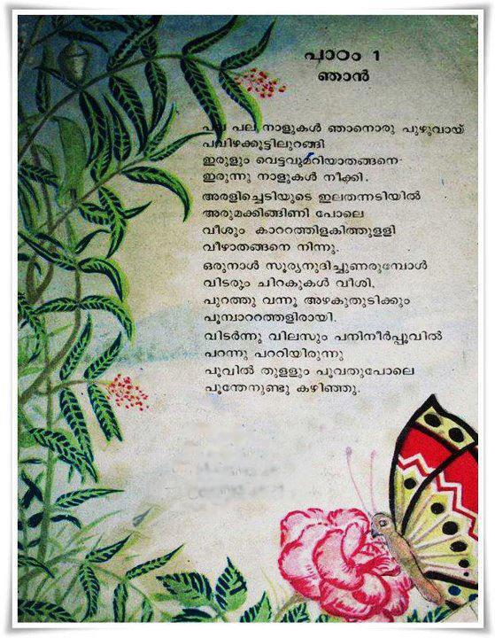1983
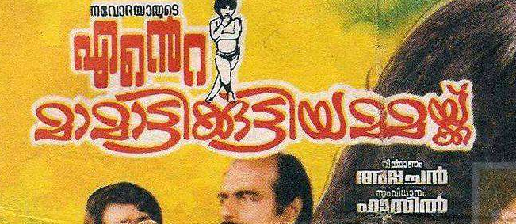ആസ്കി ഫോണ്ടുകളുടെ കാലം
ലിപിവൈവിദ്ധ്യത്തിന്റെ തിരിച്ചുവരവ്
2017
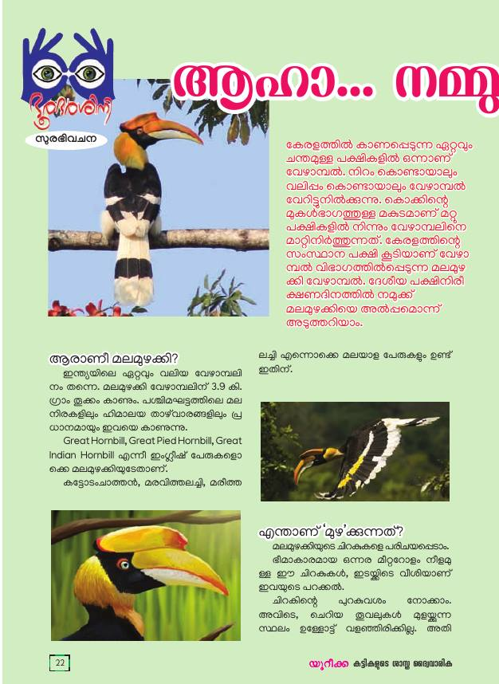2017
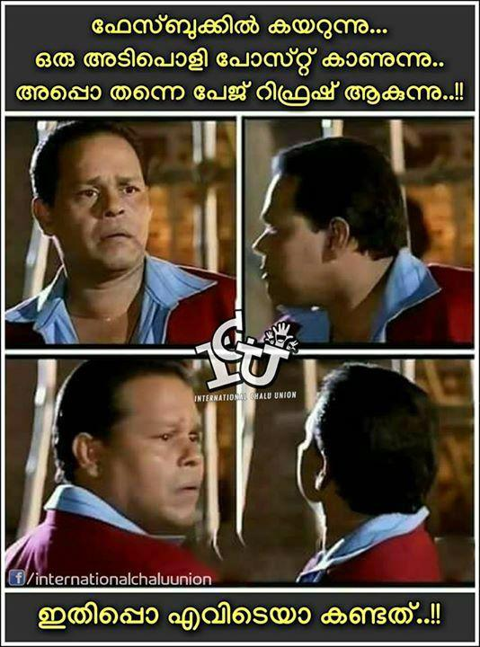2017
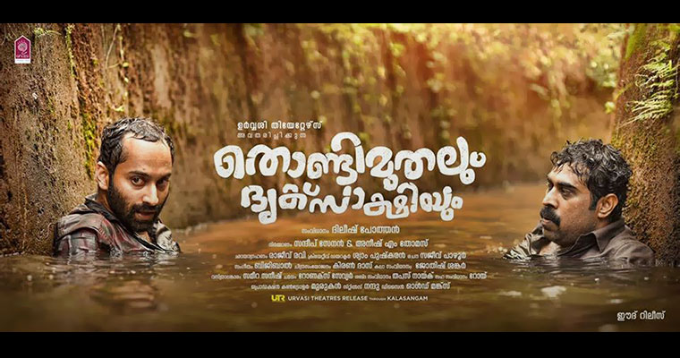2022 വീണ്ടും ലിപിപരിഷ്കരണം
2022 വീണ്ടും ലിപിപരിഷ്കരണം
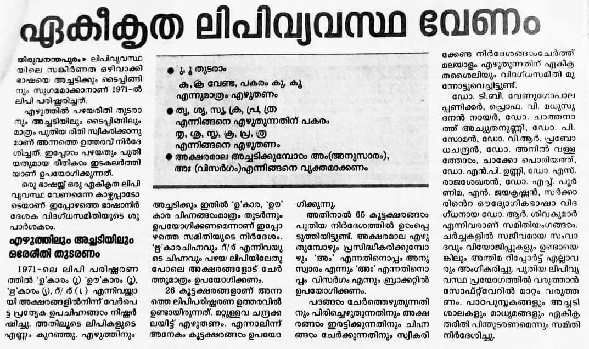2022 സർക്കാർ ശൈലീപുസ്തകം
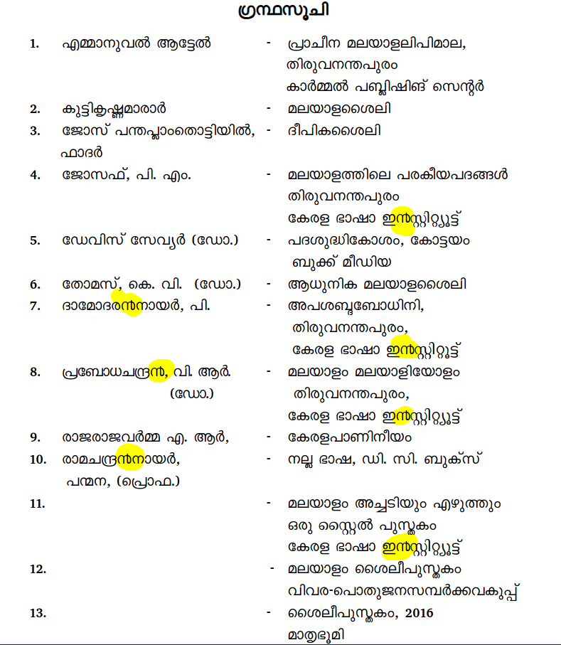2022 സർക്കാർ ശൈലീപുസ്തകം
2024

2024

2024
തീരാത്ത ചിത്രീകരണ പ്രശ്നങ്ങൾ
ന്റ
ന്റ ൻ്റ ൻറ
ചില്ല് പൊട്ടിക്കുന്ന ഫേസ്ബുക്ക്
2024
6. യൂണിക്കോഡ്: ഭാഷാ കമ്പ്യൂട്ടേഷൻ സാദ്ധ്യതകൾ
spell checks, grammar checks, Machine Translation, QA, chatbot, tts, voice typing